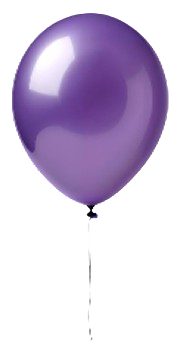

"tio Lê é
maluco"

Julia

"tio Lê é
maluco"
Por ter nascido no dia 20/04, muitos pensam que ela seja ariana. O que poucos sabem é que os astros não são tão exatos assim… O signo pode variar quando a data de nascimento está próxima dos limites do período astronômico. No caso da Juju, ela é taurina!
Jujubita odeia quando estão brincando com ela e param de dar atenção para falar com outras pessoas. Ela quer atenção total!😡
Cuidado que ela é X9!
Ela adora contar tudo que os amigos
da escola fizeram (sejam coisas boas ou não...)
A julinha ama vestidos, esmalte, perfumes - quanto mais feminino, melhor!
Jujuba nasceu com uma pequena intolerância
a lactose, não podendo tomar/comer derivados.
Nem mesmo o leite materno.🥛😭
P.S. mas agora ela já pode comer de tudo!
Julita não consegue ver filmes, desenhos, séries...Tem pouca energia de foco. Mas ama Patrulha Canina!
Ela sempre foi muito alta para a idade. Por isso, na escola, deram um brigadeiro para ela antes dela ter a idade para provar açúcar - foi amor a primeira mordida!
♥1º Encontro♥
26 de Junho de 2021
Um casal de amigos muito queridos se casou em 2018, poucos meses antes de eu me mudar para São Paulo.
Com a pandemia, acabamos nos aproximando ainda mais, com reuniões diárias pelo Meet, Zoom e afins. Em uma dessas ocasiões — durante a comemoração do aniversário de uma amiga, em outubro de 2020 — eles anunciaram uma surpresa: estavam grávidos!
Alguns meses depois, descobrimos que seria uma menina. Pouco tempo depois, soubemos também o nome: Júlia!
Ela era esperada para o início ou meio de março, mas, durante um exame de rotina, tivemos uma surpresa: ela precisaria nascer naquele mesmo dia — 20 de abril!
Devido distânciamento social e cuidados da época, só consegui conhecê-la pessoalmente no dia do meu aniversário (26/06), mais de 2 meses depois do seu nascimento.
Foi o primeiro bebê que peguei no colo, o primeiro que tive o prazer de alimentar e ver dormir em meus braços.
Sonequinha
Na época que dormia depois de comer.